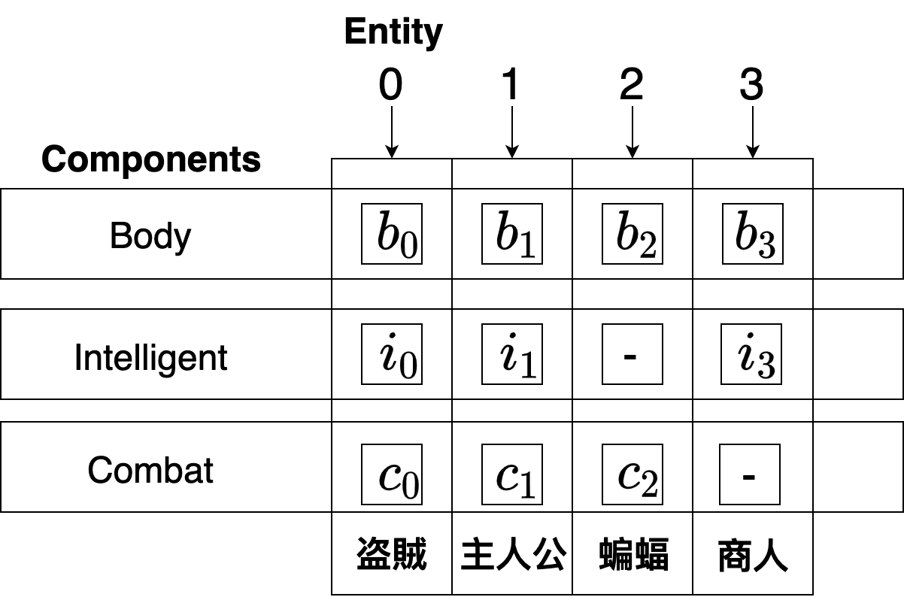
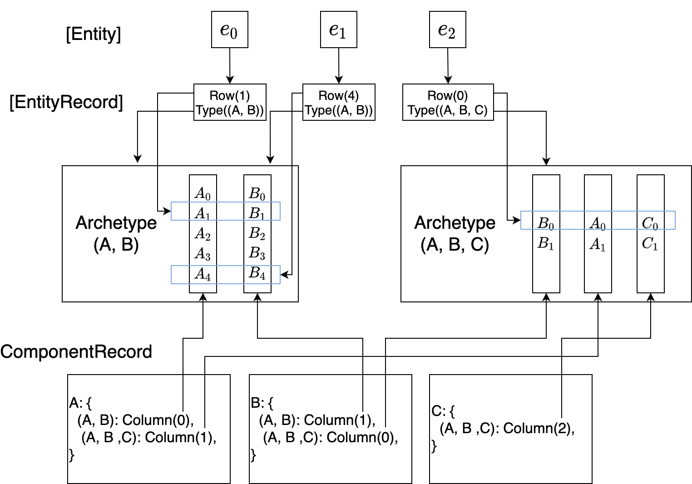
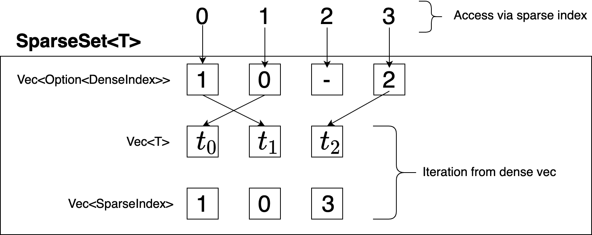
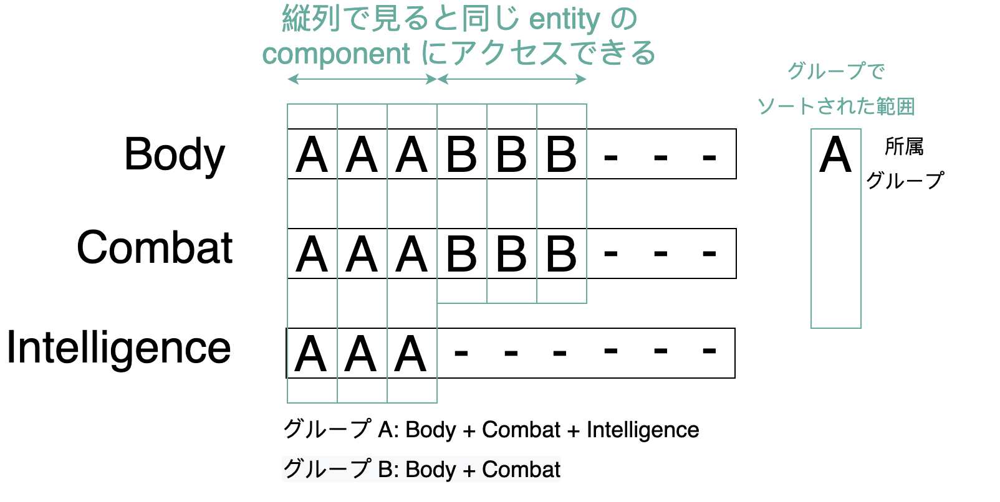
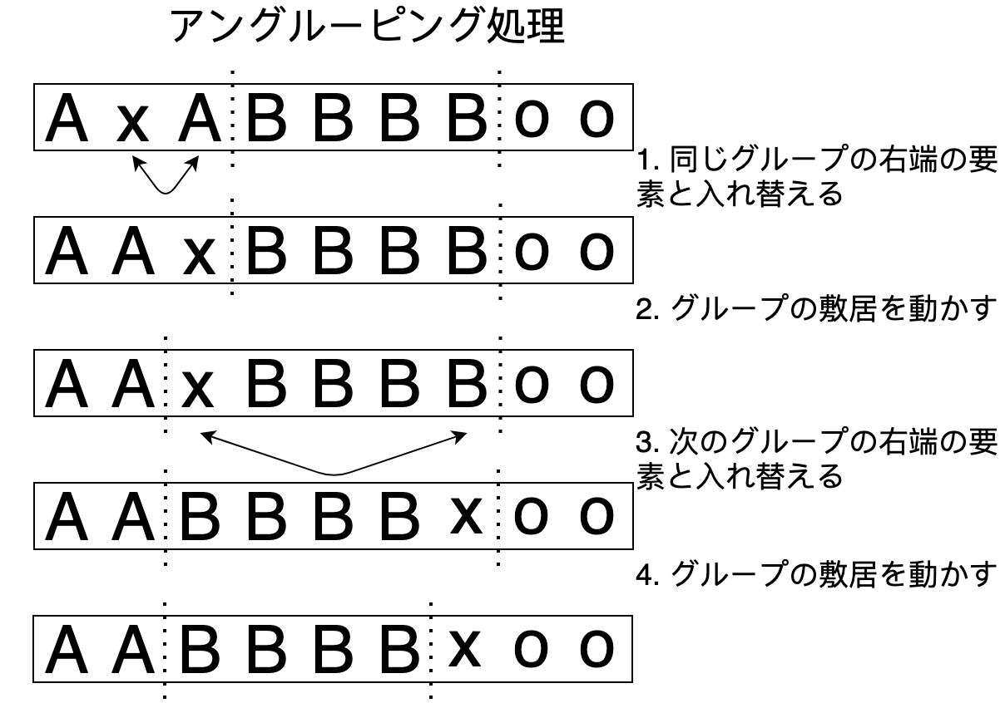
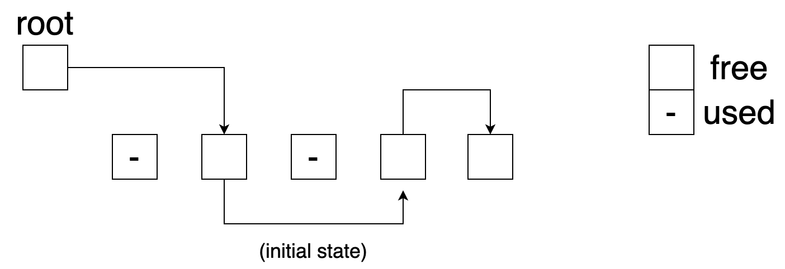
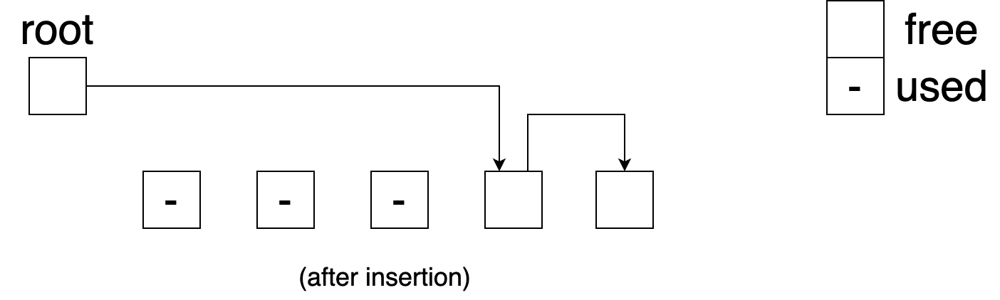
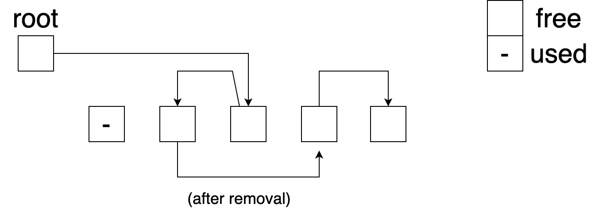

背景
Entity-Component-System (以下 ECS) はゲーム開発で有名な設計です。特に Rust では借用ルールとの兼ね合いが楽になるため、最もメジャーなゲームの作り方となっています。
この記事では ECS の内部実装、特にデータの保存方法を紹介します。また主に Rust ユーザの目線でコメントします。
元ネタ
この記事は、以下の記事の解説を図にした (つもり) のものです。独自の解釈は入っていますが、自分で考えた方法ではありません:
- ECS back and forth シリーズ
EnTT の解説です。 Sparse set ベースの実装の解説に当たります。 - Building an ECS シリーズ
flecs の解説です。 Archetype ベースの実装の解説に当たります。
3 種類の ECS ストレージ
実装 1: Vec<Option<T>>
まずは ECS の概念図を説明します。コンポーネント配列 (横列) に対し、 Entity は添字に相当します:

それぞれのコンポーネントは optional ですから、 Vec<Option<T>> をコンポーネントストレージにするのが ECS の最も簡単な実装です。
実装 2: Archetype
こちらは詳しくないため、図だけ載せます:

- Component セット毎に archetype ストレージを作成します
- Archetype ストレージの内部実装は
{ Vec<A>, Vec<B>, .. }のような形です (SoA: struct of arrays)
- Archetype ストレージの内部実装は
Entityに対する component の追加・削除に高速で対応するためキャッシュを作ります。
実際、 archetype ベースの ECS hecs の World は以下のような構造体です:
pub struct World {
entities: Entities,
archetypes: ArchetypeSet,
bundle_to_archetype: TypeIdMap<u32>,
insert_edges: IndexTypeIdMap<InsertTarget>,
remove_edges: IndexTypeIdMap<u32>,
id: u64,
}
実装 3: SparseSet<T>
Zenn の投稿 の焼き直しです。詳しい解説ではなく、内容が伝わらないと思いますので、改稿を考えています。
コンポーネント配列を Vec<Option<T>> にすると、空のコンポーネントスロットが大量にメモリを占領するかもしれません。またイテレーションの効率も落ちます。
空きスロットがあるとキャッシュミスが増えます。また密で連続な配列に対するループは SIMD になる可能性があるそうです。
そこで SparseSet<T> においては、コンポーネント配列を連続した配列に入れます (Vec<T>) 。また Entity からコンポーネント配列への添字アクセスの間接層を追加します (Vec<Option<DenseIndex>>):

より詳しく実装を解説します。
世代番号
Entity は、いわゆる generational index です:
pub struct Entity {
raw_index: u32,
generation: u32,
}
Entity を削除する度、スロットの世代番号がインクリメントされます。削除された Entity は古い世代番号を持っているため、無効な Entity として扱われます。
グルーピング処理
SparseSet<T> から要素を取得するメソッドは 2 つです:
fn get_by_sparse(&self, entity: Entity) -> Option<&T>
Entity経由のアクセス (SparseIndex経由のアクセス) です。こちらは低速です。fn get_by_dense(&self, dense: DenseIndex) -> Option<&T>
生配列経由のアクセスです。こちらは最速です。
Entity 経由のアクセスは添字のマッピングを経由するため、メモリ局所性が落ちてしまいます。最速でイテレーションするためには、『グループ』という仕組みを使います。グループ化された Entity のコンポーネントには、すべて共通の DenseIndex からアクセスできます:

これは Entity を削除したり、 Entity にコンポーネントを追加・削除する際のグループの更新処理で実現されます:


Entity の挿入と削除について
空きスロットの連結リストを管理すると、 Entity の挿入を\(O(1)\) の処理にできます。
例として以下の初期状態を考えます:

初期状態からデータを追加した後は:

初期状態からデータを削除した後は:

Entity の削除について
Rust の Vec::remove は要素のシフトを起こす \(O(n)\) の処理です。 Vec::swap_remove は、末尾の要素と入れ替えてから削除しますから \(O(1)\) の処理で済みます。
また先ほどのグループの更新処理のため、コンポーネントの追加・削除処理は別種のコンポーネント配列も書き換えることになります。そのため Entity やコンポーネントの追加には &mut World を要求するのが無難です。
まとめ
ざっと解説しましたが、あまりにも粗い説明だったと思います。時間があるときに書き直したいです。